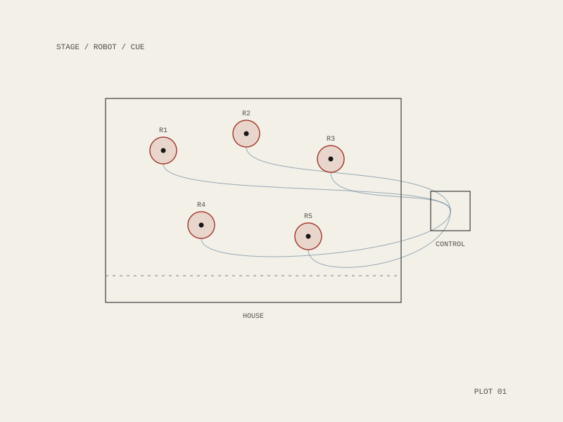

Heddatron
Elizabeth Meriwether’s absurdist play drops an unhappy housewife into a cast of self-aware robots, updating Ibsen’s Hedda Gabler for its centenary year. The robots were designed and built by Botmatrix.

The cast
Five robots took the men and the household: Hans as Eilert Lovborg, Billy as George Tesman, Brack-Bot as Judge Brack, and Aunt Julie-Bot and Berta-Bot. Jane Gordon, the human at the centre, was played by Carolyn Baeumler. It premiered in 2006 at HERE Arts Center in New York, produced by Les Frères Corbusier and directed by Alex Timbers, in the centenary of Ibsen’s death.
Why robots make it work
The joke is structural, not decorative. Hedda Gabler is a play about a woman boxed in by men who are entirely predictable — and a robot is a machine for being predictable in public. Casting the men as machines does not soften the domestic drama; it makes the trap legible, because you can see the mechanism.
Which is also the engineering problem. A robot on stage has to hit its mark on a cue, night after night, in a room full of people, with no retake — a constraint closer to live instrument-building than to demo work.
Botmatrix — Cindy Jeffers and the artist
Les Frères Corbusier
dir. Alex Timbers
HERE Arts Center, New York